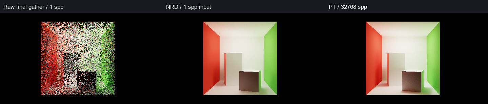
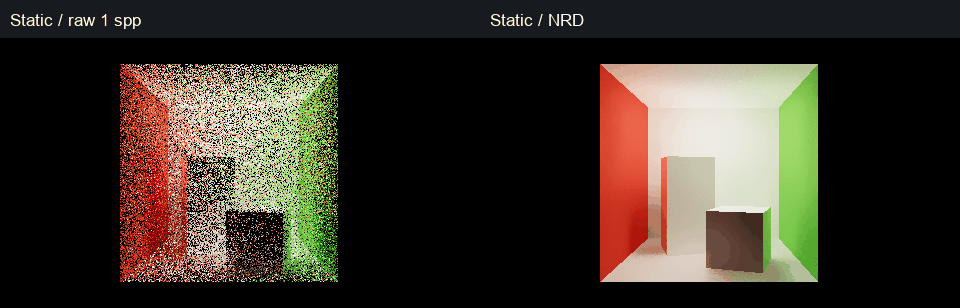
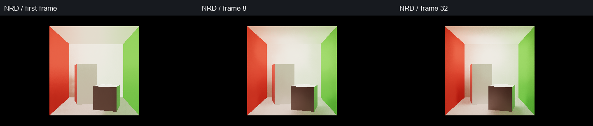
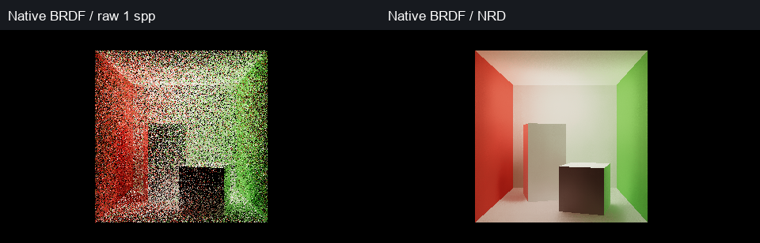

已接入现有 NRD 的 RelaxDiffuseSpecular。每帧仍是全分辨率、每个有效 lobe 最多一根射线；默认关闭普通 AccumulatePass。下图中央是第 160 帧的单张 NRD 输出，没有再对输出平均。镜头静止时，NRD 的空间滤波与有限历史融合能显著减少噪点。

| 输出 | 间接光 MSE | HDR-FLIP | 固定像素时间方差 | 平均 RGB |
|---|---|---|---|---|
| Raw | 0.0821041 | 0.6399 | 0.0795216 | 0.05855 |
| NRD | 0.000167967 | 0.1856 | 2.52864e-06 | 0.05389 |
预热 NRD 128 帧后，连续 32 帧逐帧对照同一 PT 参考，再对指标取平均。时间方差为固定可见表面像素、RGB 通道上的总体方差平均。不能只凭低方差判断正确：强平滑也会降低方差。NRD 平均亮度相对原始输入改变 -8.0%，并出现接触阴影变软，表明滤波引入了偏差；不是无损恢复。


运动使用此前相同的 8 个机位，每帧向右平移 0.04m；参考每机位 512 spp。NRD 在运动期间历史重置次数为 0，表示连续历史参与重投影。关闭后重新开启触发 1 次清空，避免读取停用期间的过期历史。这里只验证短程平移，不据此保证快速转身、动态物体、镜面反射或大范围遮挡变化都无拖影。

同帧 StandardMaterial 的漫反射与镜面反射合成，镜面输入非零；Lambert 场景镜面输入严格为零。原生材质图用于检查两个通道都能接入，不是有独立镜面 PT 真值的量化评测。理想镜面/透射没有采用 PathTracer 的专用 delta 路径处理。
| 开关 | DDGI ms | NRD ms | 合成 ms | 三者合计 ms |
|---|---|---|---|---|
| 关闭 | 0.3010 | 0.0073 | 0.0049 | 0.3132 |
| 开启 | 0.3054 | 0.1456 | 0.0057 | 0.4567 |
RTX 5070、D3D12、480×270，每种模式 127 个完整 GPU 时间戳区间；计时开启探针更新，两种模式相同诊断输出；排除 GBuffer、显示和文件写入。NRD 关闭后仍有半精度旁路拷贝与合成开销。图像评测则先更新探针 2048 帧再冻结，避免缓存变化干扰噪声测量。
运行项目根目录 Run-FinalGather.cmd，加载场景，在 Denoiser 面板切换 Enabled。脚本：m.activeGraph.getPass("Denoiser").set_properties({"enabled": False})；设置 True 恢复。Accumulate 默认禁用，可独立开启做静态实验；本报告全程关闭。
DDGI 新增 diffuseRadianceHitDist、specularRadianceHitDist、diffuseReflectance、specularReflectance、unfilteredColor。漫反射除以 albedo、镜面除以近似 GGX 预积分反射率；NRD 后乘回并加直接光/自发光/背景。不存在的 lobe 反射率为零；有效 lobe 的去调制分母下限 1e-4。距离是 x→y 的真实世界空间距离，miss 为有限 FP16 最大值 65504，未采样为 0。导向来自同一 GBuffer 的世界空间运动、线性深度、法线和粗糙度。RELAX maxIntensity=10000，使用项目现有默认滤波参数。
原始 DDGI.color、gatherDiffuse、gatherSpecular 保留为未降噪输出。关闭 NRD 后 Compose.output 相对原始 color 的 L1 差异小于 0.1%，差异来自现有 NRD 旁路的 FP16 格式。切回原始 probe 查询时走 unfilteredColor，检查结果完全一致。所有捕获 EXR 都经过有限值检查，材质/光照诊断无拒绝样本。
沿用上一份 Lambert Cornell 点光源、相机、probe 9×9×9 与偏移配置。PT 参考为独立保存的 32768 spp，最多 19 surface bounces；不是无限精度真值。NRD 只处理 final gather，未处理直接照明采样噪声；无镜面递归、无 reservoir 重采样。显示使用共同 +3 EV、ACES fitted、sRGB；HDR-FLIP 使用固定曝光区间 4.002 到 6.461 EV、PPD 67。
build\windows-vs2022\bin\Release\Mogwai.exe --device-type d3d12 --headless --deferred --script tests/ddgi/final_gather_nrd.py --width 480 --height 270 python tests/ddgi/score_final_gather_nrd.py
需要先有 tests/ddgi/final_gather_compare.py 生成的场景配置和 PT 参考。原始捕获与计时位于 build/final-gather-nrd。评分依赖与上一份报告一致。